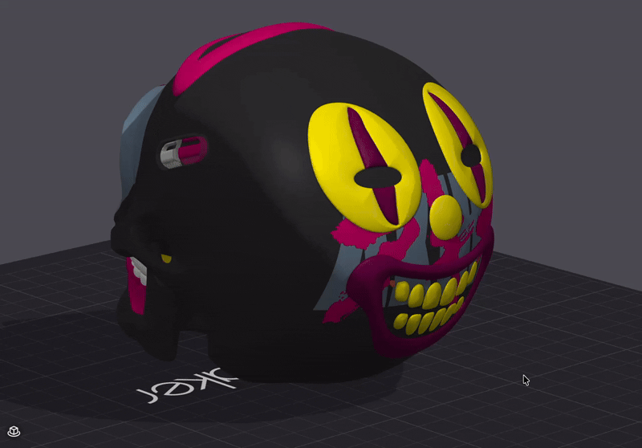

§6 — Build & fix
Draw & sculpt: brushes, Clay and carving
Draw free hand on the object with brushes that feel like a drawing app, then give the drawing real volume: raise it off the surface as parts in their own filaments, or carve it into the object. It all stays a vector, so you can still move it, recolour it and rebuild it.
- no gate
- Clay: experimental
- 2.5.0
Painter (Color painting) › Vector Brush (key P) · Vector (key V) · Clay (key K)

What you had to do without it
Before
A drawing meant an SVG made in another program. Paint on a model was flat, and anything raised had to be modelled in CAD, exported, placed and lined up with the paint by hand.
With 2.5.0
Draw on the object inside the slicer. Press ✓ and the drawing is a decal. Give it Height in the Clay tab and it becomes parts that follow the surface, or an engrave cut into it.
Vector Brush
Draw with the left button and the stroke comes out smooth, thinner where your hand goes fast and thicker where it slows, with tapered ends. The stroke engine is Quill, a method by Gabriel Suchowolski (microbians), MIT licensed (bezier, sktch, the maths). It turns the line into a chain of exact quadratic curves with very few nodes, so even a dense drawing stays light to slice.
| Tool | What it does |
|---|---|
| Brush | Free hand. Styles Natural, Quill ink, Pen, Marker, Dirty ink; Width by Speed, Ink or Constant; Inertia and Drops. |
| Line | Click point by point. Click and drag pulls out a curve, Alt makes a corner. Enter or a click on the first point finishes it. |
| Wrap | Experimental. The same, but on the object itself, see Draw on surface. |
| Eraser (E) | Erases every stroke it goes over, whatever its filament, and never destroys anything: Undo stroke brings it back. Alt + click a stroke to edit its knobs. |
- Each stroke keeps its own knobs and its own filament. Change Size or the filament and only the next strokes change.
- Ctrl+Z takes back the last stroke or point, not the decal you saved before.
- The view stays put until you press ✓, because the strokes are pinned from that view.
- A Preview box under the knobs draws the next stroke with the current settings.
Brush effects
Effect opens a grid with a live picture of each one. An effect turns one stroke into many small shapes (strands, dots, dashes), and the result is still a vector, so Clay, mirror and colours work on it like on any decal. Try them here: draw on the canvas, pick a filament, pick an effect.
port The strokes are built by a line by line JavaScript copy of
stabilize, resample, widths and effect_pieces from
src/libslic3r/PaintStroke.hpp, with the same seeded random numbers, so a stroke gives the same
strands as in the app. The mouse speed is yours, so widths depend on how you draw. Drawn on a flat canvas
in pixels; in the app ✓ projects them on the object.
| Effect | What it does | Knobs |
|---|---|---|
| Plain | the stroke as it is | |
| Hair / fur | strands that grow out of the stroke | Density, Length, Root, Lean, Randomness |
| Stipple | the stroke made of dots | Density, Dot size, Edge falloff |
| Dashed | dashes and gaps along the stroke | Dash, Fill |
| Grass | blades standing up from the stroke | Density, Length, Root, Sway, Randomness |
| Calligraphy | a flat nib: thin along its angle, thick across | Nib angle, Thin stroke |
| Dither edge | a solid core whose edge breaks into dots | Halo, Density, Dot size, Falloff |
Two colours: layer the strokes
There is no special two colour brush. Paint hair in one filament, switch filament and paint a clean line over it, then press ✓ once. You get one decal with one zone per filament. Where strokes overlap the newest one wins, as with layers in a drawing app: before saving, each stroke loses what newer strokes of another filament paint over it, so every zone keeps only what shows. You can still change the filament of each zone later in the Decals list.
Thin things may not print
A dot or a strand tip thinner than one line (about 0.4 mm on the object) is too small for the printer, and the slicer may drop it. On a small Size, raise Dot size or Root, and check the slice.
Clay: give the drawing volume
The Clay tab takes any decal (a drawing, a loaded SVG, a shape) and builds real parts from it. Every colour becomes its own part with that colour's filament, so it slices like any part of the object. Parts rebuild by themselves when you move or edit the decal, in the background, with Cancel.
The parts stay tied to the decal. Drag it to another spot, scale it, change a colour or its height, and when you let go of the mouse the parts are built again where the decal is now. You keep painting and the volume follows. When you are happy, Detach turns them into normal parts, or Freeze keeps them as they are and lets other layers grow on top.
| Control | What it does |
|---|---|
| Height, Height per colour | How far the part rises. The general Height scales all the colours. |
| Raise / Engrave / Off | Per colour. Engrave makes one negative part per decal, with a step where two depths meet. |
| Edge, Falloff | Flat, Chamfer or Round, and how soft. The edge follows the SVG exactly, so small text slices clean. |
| Surface smooth | Default 0.2 mm. Fills the grooves and sinks the bumps under the part, so the top doesn't copy every vein of the surface. The top always stays at least 0.4 mm over the real surface. |
| Anchor raise to engrave | A raised colour inside an engrave goes down to the bottom of the hole instead of floating. |
| Apply all engraves | Cuts every engrave into the object at once. If the fast boolean fails a slower one takes over, and a volume check makes sure nothing loses more than the engraves. |
| Freeze | The snowflake in the list. Those parts stay as they are and count as part of the object, so the Clay of other layers grows on top of them. |
| X-ray engrave | Shows the negative parts in see through red while you paint. |
| Detach | Turns the parts into normal parts. |
| Paint under | Off by default. Also paints the colour under the part, which can help a very thin part stick. Leave it off if the decal will move. |
| Repair parts | Off by default. Rebuilds each part from voxels, a safety net when one comes out odd. |
If the surface under a decal has detail finer than your layer height can print, the panel warns you. The step it looks at is 2.5 × the layer height of the object.
How the part grows
A Clay part grows straight towards the view the decal was placed from. That is the honest choice: growing along each triangle's normal folds over itself on a fine mesh. The catch is the sides of the model. Where the surface is seen almost edge on, growing towards the view slides along the skin, and the part ends up as a sheet thinner than one line. The slicer drops it, and since the part covers the paint under it, that spot comes out empty. Min thickness fixes it: wherever the part is thinner than 0.42 mm measured along the surface normal, it is pushed out until it isn't.
A diagram, not a port: a 2D profile with the rules from PaintClay.hpp
written out simply (straight growth, a gaussian Surface smooth with the 0.4 mm cover, Min thickness along the
normal). The real tool works on the 3D mesh and has more to it (Follow surface, Stretch, the exact edge).
Advanced growth
| Control | What it does |
|---|---|
| Follow surface | The part grows along the average shape of the surface within R mm, so it wraps the form like a thick sticker. Small R follows every turn; large R is almost straight. On uneven surfaces, go higher. |
| Stretch over gaps, Stretch slope | Where the surface jumps in depth as seen from the view, the part stretches over the jump like an elastic instead of leaving wedges. Works best on small jumps. |
| Min thickness | Default 0.42 mm, one line. Thickens the part along the normal where it would be too thin. |
Tip for hollows and complex shapes
Clay can only raise what the decal sees. For a decal that crosses a hollow (an eye socket, between teeth), paint it first in Vector with Depth Through and Through depth 15 to 20 mm: the colour reaches the walls and the bottom without coming out at the back. Then build the Clay with a small Stretch and a high Follow surface. The paint covers what the Clay can't reach, and the drawing reads whole.
Draw on surface and Wrap experimental
Everything above is drawn on the screen and pinned from one view. Draw on surface (in Vector) and Wrap (a Vector Brush tool) put the points on the object instead, so you can turn the view between clicks and the line wraps round the model.
- Click = corner. Click and drag = curve, Alt only bends the way out. Drag a point to slide it along the surface.
- Draw on surface: click the first point for a closed shape, Enter for an open line with a Width.
- Wrap: an open line, as wide as the brush Size in mm. The preview turns red under 0.4 mm.
- Its Clay grows piece by piece round the object, each piece from its own direction.
- For now it is meant for Clay: Apply paints it as seen from its middle, and Wrap has no effects yet.
The painter, reorganised
- One Decals list for Vector and Clay, each layer with an eye (show) and a lock (no moving by accident).
- A small bar on the canvas over the selected decal: move, ✓ done, pencil (edit), drop (paint it on the object). While you edit on screen a floating ✓ / ✕ accepts or cancels.
- Merge N layers: Shift + click two or more layers and merge them. Each colour keeps its filament. Only for layers placed from almost the same view.
- Duplicate copies a layer right under it, same place and settings.
- Mirror buttons are icons now: left/right, front/back, up/down.
The rest of Vector mode (loading SVGs, decals, mirror brush) is on the painter page.
Remesh keeps it all
Remesh has two new options, both on by default. Keep decals & recipes carries the decals, their Vector and Clay settings, the mirror centre and the object's settings to the new mesh. Keep Clay & extra parts rebuilds only the plain parts and moves Clay parts, engraves and modifiers over as they are. Repair a broken skull without losing a single decal.
The catch
- Clay is experimental. Check the slice of every part, above all near steep sides and hollows.
- Merge works only for layers placed from almost the same view (15° or less).
- When you leave the painter, Orca joins everything you did there into one undo step.
- Draw on surface and Wrap are for Clay for now; their paint comes from one view.
- Heavy models: the painter is lighter in 2.5.0, but a million triangle skull with many Clay parts still asks a lot of the machine.
Covers the painter's Vector Brush, brush effects, Clay Tool and Draw on surface, release 2.5.0
(NEOTKOCM_RELEASE_2_50.md). Quill by Gabriel Suchowolski (microbians), MIT.